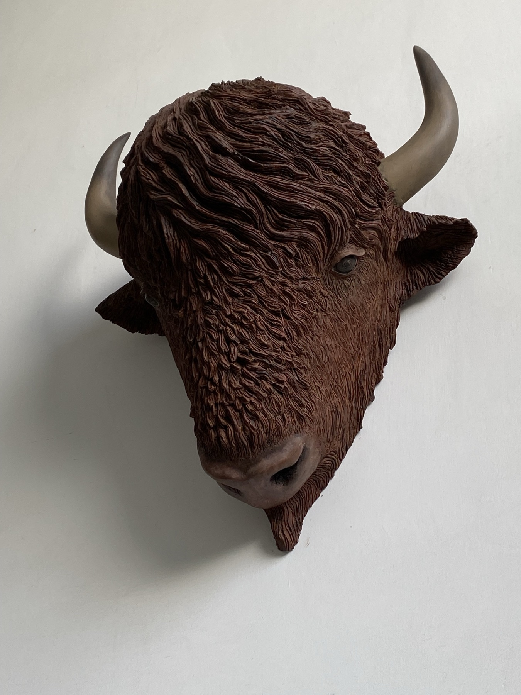
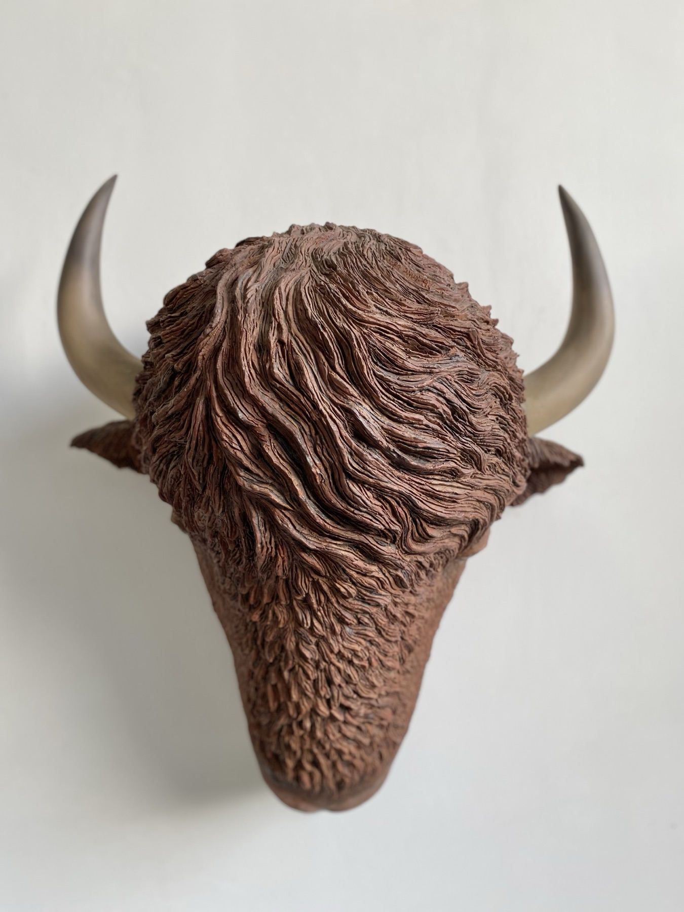

Diario · 16 novembre 2026
Quanto pesa una testa di bisonte in terracotta
«Maurizio, ma quanto pesa?» È la domanda che mi fanno tutti, appena se lo trovano davanti. Ti rispondo in fondo. Prima ti racconto com'è fatto.
La Testa di Bisonte Americano l'ho fatta nel 2011. Da vero appassionato degli Indiani d'America, ho voluto fare la testa di un bisonte. Americano, non europeo.
È tutta in terracotta. Puoi immaginare il peso, e il lavoro che c'è dietro: svuotarla, modellarla, scolpirla.

Il bisonte americano ha dei tratti che lo distinguono: gli occhi, sempre completamente neri, il colore della pelliccia, il naso. Ma la cosa che volevo a tutti i costi erano i crini in cima alla fronte, mossi dal vento. Sul muso ho ricreato la peluria e la barbetta.
Poi le corna. In natura hanno una forma particolare, non sono proprio dritte. Per rendere questo effetto le ho curvate un pochino verso la punta.

E adesso la risposta. Almeno venti chili, questo di sicuro, ma sono certo che sono molti di più. E non sto contando la struttura che lo sorregge: anche quella l'ho fatta io.
È un pezzo unico, ed è in vendita. Se ti interessa questo, o un altro dei miei pezzi, scrivimi dalla pagina Contatti.
Testa di Bisonte Americano · Terracotta · 2011 · collo 160 cm, larghezza corna 48 cm, sporgenza fronte 35 cm